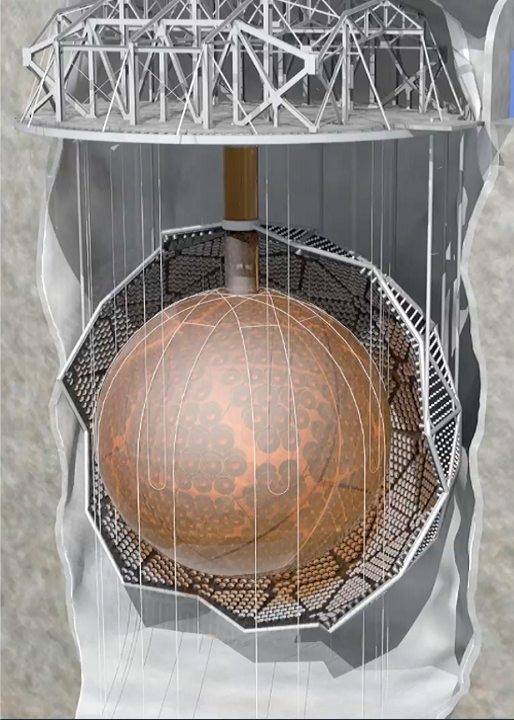
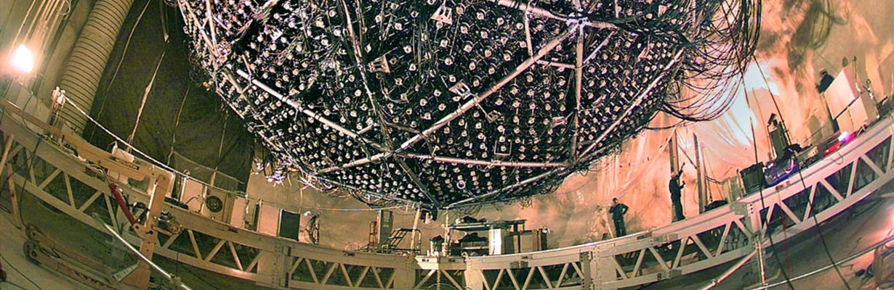

The SNO+ Experiment is a liquid scintillator detector for studying neutrinos. Successor to the Nobel Prize-winning Sudbury Neutrino Observatory (SNO), the experiment is located 2km underground in Vale's Creighton mine near Sudbury, Ontario, Canada. The heart of the SNO+ detector is a 12m diameter acrylic sphere filled with 780 tonnes of liquid scintillator, and floats in a 7000 tonne ultrawater bath which serves as external shielding from surrounding ambient radioactivity. . This volume is monitored by nearly 10,000 photomultiplier tubes (PMTs), which are very sensitive light detectors. The acrylic sphere, PMTs and PMT support structure were upgraded and refurished from the original SNO Experiment and a suite of new infrastucture such as a rope-net system was built into the detector. As a result, SNO+ resembles a significantly upgraded version of the predecessor experiment. The SNO+ experiment is run by an international collaboration with participants from Canada, the United Kingdom, the United States, Portugal, Germany, and China.
Liquid Scintillator
Liquid Scintillator is an organic liquid that gives off light when charged particles pass through it. SNO+ will detect neutrinos when they interact with electrons and nuclei in the detector to produce charged particles which, in turn, create light as they pass through the scintillator. The flash of light is then detected by the PMT array. Previously, the detector was filled with ultrapure water and operated as a water Cherenkov detector. With the replacement of water with liquid scintillator, events will produce signals 50 times brighter than before, thereby allowing SNO+ to explore new neutrino physics measurements and studies.
The SNO+ collaboration developed a new type liquid scintillator based on linear alkylbenzene (LAB). Compared to existing widespread liquid scintillators, LAB is very safe to handle and environmentally friendly while maintaining good light output, transparancy, and compatibility with SNO+ infrastructure. LAB has since been adopted as a premier liquid scintillator by scientists around the world. With properties similar to mineral oil, LAB is used commercially to manufacture many things including dish soap, and is readily available. The LAB used for SNO+ is of excellent quality, and locally supplied from the CEPSA Química plant in Bécancour, Québec
Grid Computing
SNO+ takes data 24/7/365 and produces hundreds of terabytes of raw data every year. The raw data is shared between Canada, Europe and the US via three grid sites. The data is automatically processed daily and the output is available to analyzers less than 24 hours after being recorded.
SNO+ has a virtual organization (VO) in order to make use of the European Grid Infrastructure. The Grid is used as a means to distribute and store data among the SNO+ collaborators. The software is available via the CERN Virtual Machine Filesytem. The SNO+ Data Management Policy can be found here.
